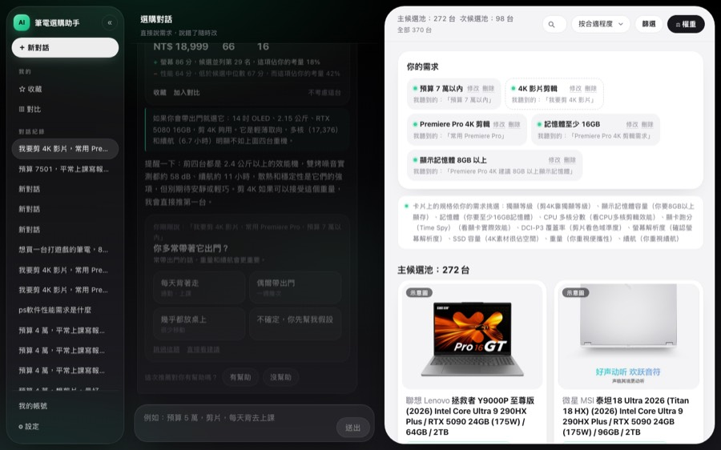
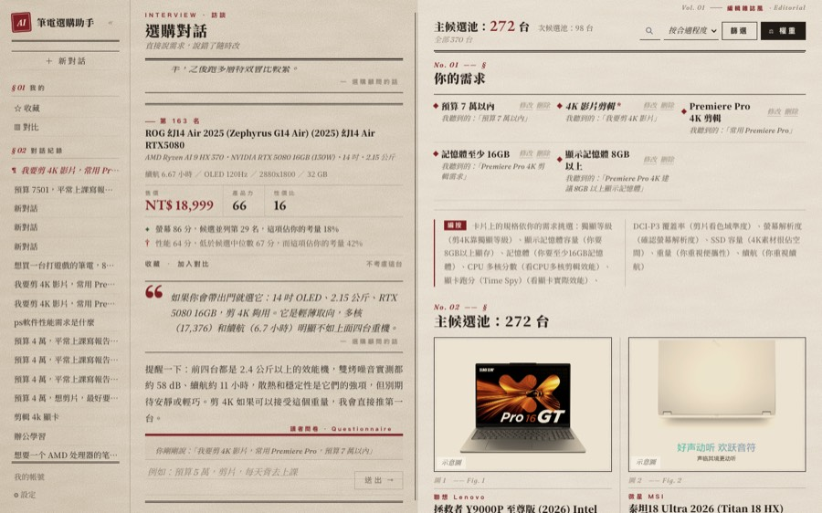
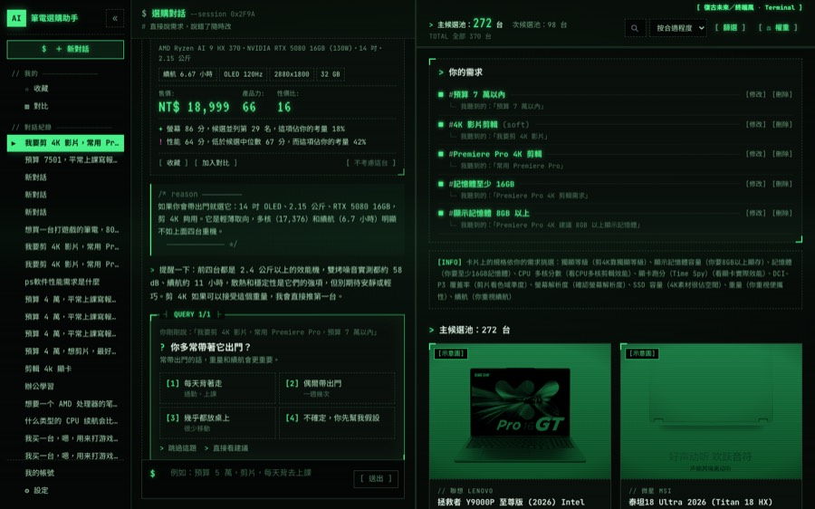
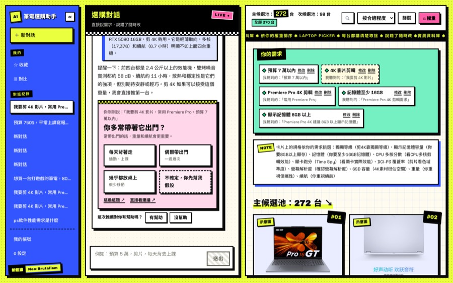
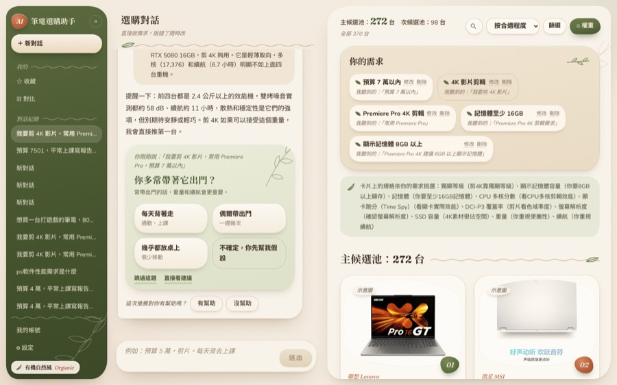
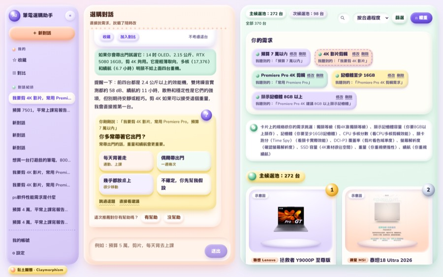
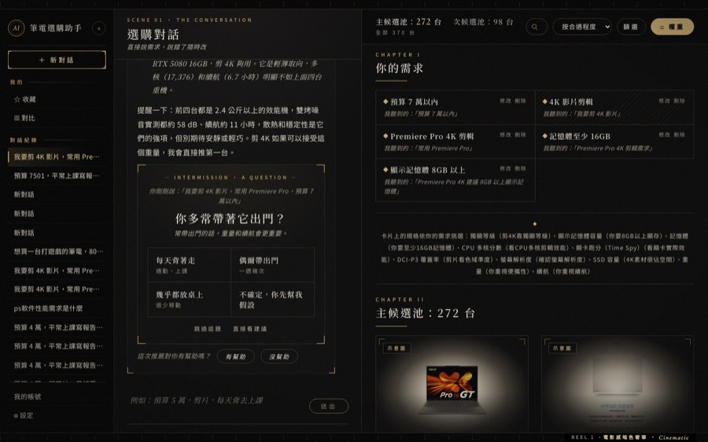
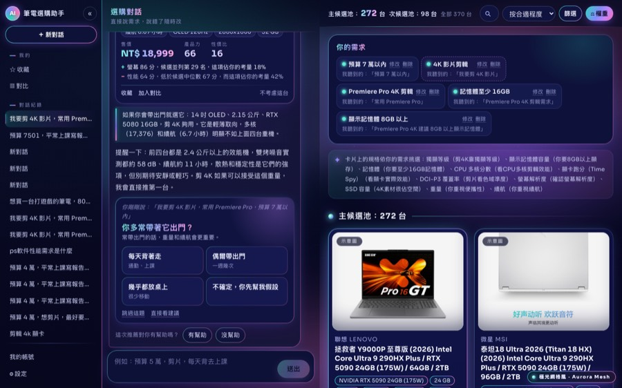
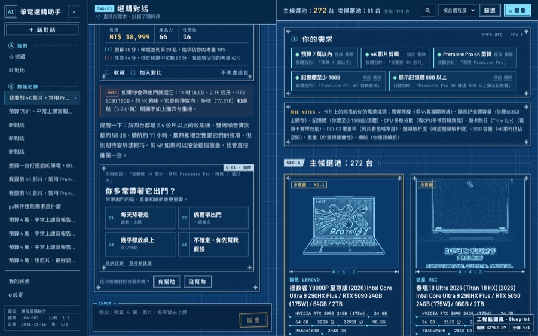

同一個畫面（對話＋需求＋候選卡片），換成 8 種不同風格。不只換顏色、圓角、字體，連陰影做法、裝飾元素、標籤形狀、標題樣式、照片處理都跟著換。點卡片打開完整 Demo。風格方向取自下方幾個熱門的設計提示詞庫。









| 來源 | 熱度 | 用到的地方 |
|---|---|---|
| UI/UX Pro Max（收錄於 Frontend Design Toolkit） | 約 6.3 萬星 | 風格清單：黏土擬態、新粗獷、極光、賽博／復古未來 |
| rohitg00/awesome-claude-design | 約 1.2k 星 | 美學家族：Warm Editorial、Cinematic Dark、Terminal-Core、Cult／Indie |
| claudekit/frontend-design-pro-demo | 約 277 星 | 11 種風格的招牌效果：黏土、Aurora、Dark OLED Luxury、Organic Biomorphic |
| superdesign-prompts | 依使用次數排名 | 使用次數第一的「Acid-Yellow Neo-Brutalist」、前幾名的「Loam 溫暖有機」 |
| VoltAgent/awesome-claude-design | 68 份 DESIGN.md | 參考 |
工程藍圖風是額外加的，因為它跟筆電規格最搭。所有 Demo 都是靜態畫面快照，按鈕不會真的運作。2026-11-16